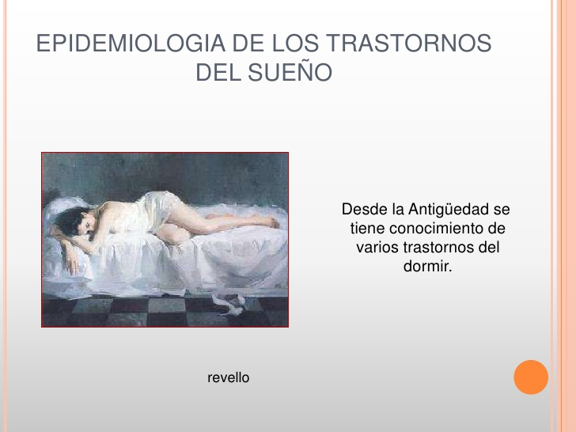

Marco historico

AGRADECIMIENTO
Cándida Peralta Bolaños: Agradecemos su ayuda, al asesorarnos en la
elaboración del Marco Histórico y en darnos algunas recomendaciones para
el Proyecto de Aula del grupo 2IV8.
MARCO HISTORICO.
El concepto De enfermedad en los pueblos antiguos consideraba aspectos
mágicos y religiosos en su origen y tratamiento. Gran parte del interés inicial del
hombre en el sueño se desarrolló en la interpretación del contenido onírico. En el
antiguo Egipto, los papiros de Chester Beatty (1350 AC) enseñar a interpretar los
sueños, en sus escritos los egipcios dan importancia relevante a la higiene y
limpieza inspirados en Toht e Imhotep, deidades curativas.
Alcmaeon del escuela médica de Crotona, al sur de Italia (siglo V AC) propuso la
tal vez primera teoría acerca del sueño, postulando que el sueño ocurría cuando
los vasos sanguíneos cerebrales se tomaban pletóricos y que cerebro en el centro
de la memoria, del pensamiento y por lo tanto del sueño. La ausencia de sangre
en el cerebro producción despertar, según la misma propuesta, esta idea del
cerebro como centro del sueño fue decisiva para la futura orientación de las ideas
al respecto.
Durante la edad media, la concepción teocéntrica del cristianismo agrícola los
médicos de la observación racional, considerando la enfermedad como castigo
divino.
Progresivamente el método científico la observación controlar y la experimentación
fueron calando como métodos válidos en contraposición a las corrientes
apriorísticas en tiempos anteriores en este sentido Von Linne (siglo XVIII) enfatizó
la importancia de los cambios cíclicos al señalar que diferentes plantas abría sus
pétalos a diferentes horas, con ello se sentaban las base para el conocimiento de
los ritmos biológicos.
En 1899, Lugaro propuso la explicación de la expansión de las neuronas en
gémulas que inducían el sueño a través de la transmisión de la información.
El aporte más importante a la praxis clínica de la medicina del sueño vino de la
electrofisiología y se convirtió, con el desarrollo de la polisomnografía, en el
estándar dorado de las pruebas para el sueño. Berger en 1929, fue el primero en registrar actividad eléctrica del cerebro humano, demostrando diferencias entre la
vigilia y el sueño.
El primer reporte con polisomnografía fue hecho por Gastaut en 1965. En cuanto a
tratamiento, Kuhlo en 1972 señaló a la traqueostomía como medida eficaz. En
1981, Fujita propuso para apnea obstructiva del sueño la técnica de
uvulopalatofaringoplastía, ideada por Ikematsu en 1964 para el ronquido. En 1981,
Sullivan ideó el tratamiento con presión positiva continua por vía nasal (CPAP),
convertido a la actualidad en uno de los tratamientos de elección
El impacto de los trastornos del sueño sobre el sistema de salud, costos y calidad
de vida ha sido remarcado en numerosos estudios realizados. Siendo una de las
más recientes especialidades de la medicina, lo aquí señalado, probablemente se
convierta en tan solo el prólogo de lo que se retome sobre historia y métodos de
investigación dentro de pocos años.